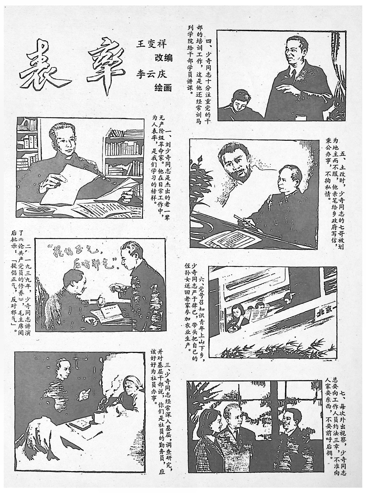

李云庆绘画；王变祥改编 《人事》1986年第8期（总第11期），封三
表率
An Example to Others
- Text in the drawing
- 提倡正气，反对邪气
Uphold rectitude; oppose evil tendencies - Panel text
- 刘少奇同志是杰出的老一辈无产阶级革命家。他在日常工作中，为人表率，是我们学习的榜样。
Comrade Liu Shaoqi was an outstanding proletarian revolutionary of the older generation. In his everyday work he set an example for others, a model for us to learn from. - 一九三九年，少奇同志讲演了《论共产党员的修养》，毛主席阅后批示：「提倡正气，反对邪气」。
In 1939 Comrade Shaoqi delivered his lectures “How to Be a Good Communist.” After reading them Chairman Mao wrote: “Promote upright conduct, oppose evil tendencies.” - 少奇同志经常深入基层，调查研究，并对基层干部说，你们是社员的勤务员，应该好好为社员办事。
Comrade Shaoqi often went down to the grass roots to investigate, and told local cadres: you are the servants of the commune members and should serve them well. - 少奇同志十分注重党的干部的培训工作，这是他还经常训马列学院给干部学员讲课。
Comrade Shaoqi paid close attention to training the Party's cadres; here he is lecturing cadre students at the Marxism-Leninism Institute, as he often did. - 土改时，少奇同志的七哥被划为地主而不服，他亲笔给乡政府写信，秉公办事，不徇私情。
During land reform Comrade Shaoqi's seventh elder brother was classified as a landlord and protested. Shaoqi wrote to the township government in his own hand: handle it impartially, show no personal favour. - 党号召知识青年上山下乡，少奇同志严于律己，带头把自己的侄孙女送回老家参加农业生产。
When the Party called on educated youth to go up to the mountains and down to the countryside, Comrade Shaoqi held himself to a strict standard and led the way by sending his own grandniece back to his home village to do farm work. - 每次外出视察，少奇同志总要向工作人员约法三章，不准向人家要东西，不要前呼后拥。
Every time he went out on an inspection tour, Comrade Shaoqi laid down rules for his staff: no asking people for things, and no entourage crowding before and behind.
- 刘少奇同志是杰出的老一辈无产阶级革命家。他在日常工作中，为人表率，是我们学习的榜样。
- Description
- Seven-panel picture story on Liu Shaoqi's conduct: refusing to intervene for his brother in land reform, sending his granddaughter to the countryside, forbidding official receptions.
- Artists
- Li Yunqing 李云庆 (drawn); Wang Bianxiang 王变祥 (adapted)
- Published in
- 《人事》1986年第8期（总第11期）, inside back cover
- Themes
- Privilege · Exemplary history · Picture stories (连环画)

Cite
Li Yunqing and Wang Bianxiang, “表率” [An Example to Others], Renshi (Personnel) 《人事》, 1986, no. 8, inside back cover.